Atelier d'art floral · Avenches
La Source aux fleurs
Fleurs coupées, plantes, éléments séchés et décorations, composés par Manon Piccand, fleuriste avec brevet fédéral, au 52 de la rue Centrale.
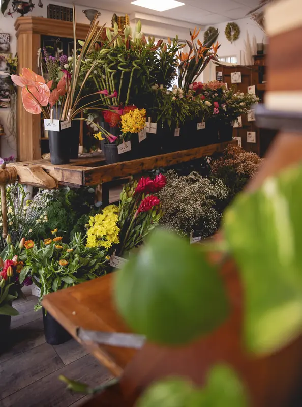
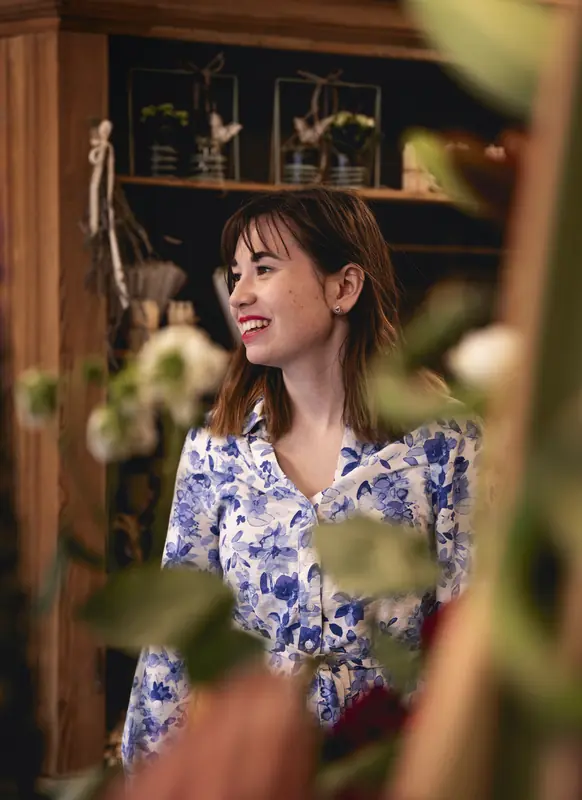
Manon Piccand
Vivre de sa passion, et la transmettre
« Depuis toute petite, je savais que je ferai ce métier. »
Cette passion lui a été transmise par son papa, horticulteur-paysagiste : tous les deux sont de grands passionnés de la nature et des choses simples. Les textures et les formes des végétaux lui donnent toujours de nouvelles idées.
- 01Fleuriste titulaire du brevet fédéral, après plusieurs années chez différents fleuristes.
- 02Enseignante pour les apprentis fleuristes CFC à l'École des Métiers de la Terre et de la Nature, à Cernier.
- 03Livraison à domicile de toutes les créations, à Avenches et dans les villages alentour.
La boutique
Des couleurs dans votre vie
Quatre familles de créations, à emporter, à offrir ou à se faire livrer.
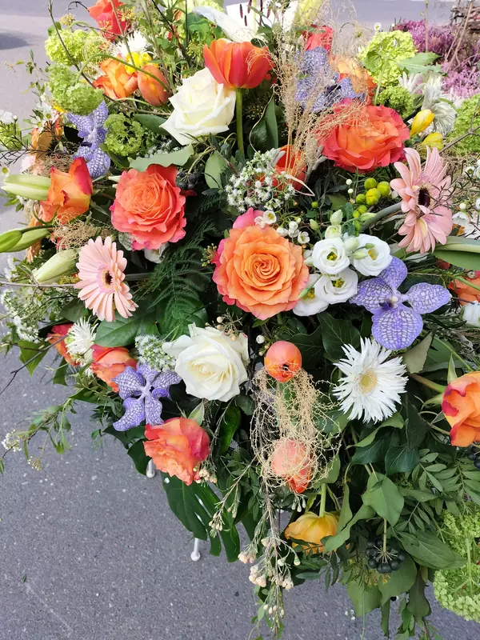
Fleurs coupées
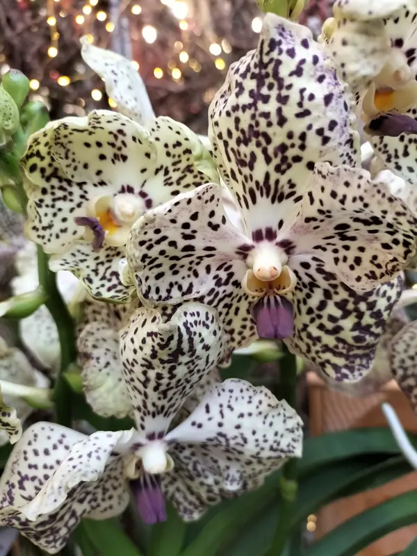
Plantes
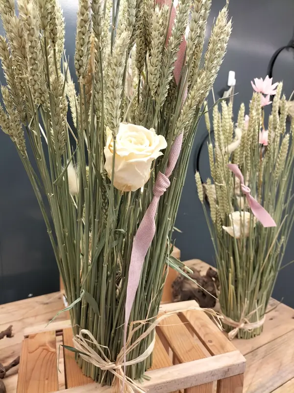
Éléments séchés
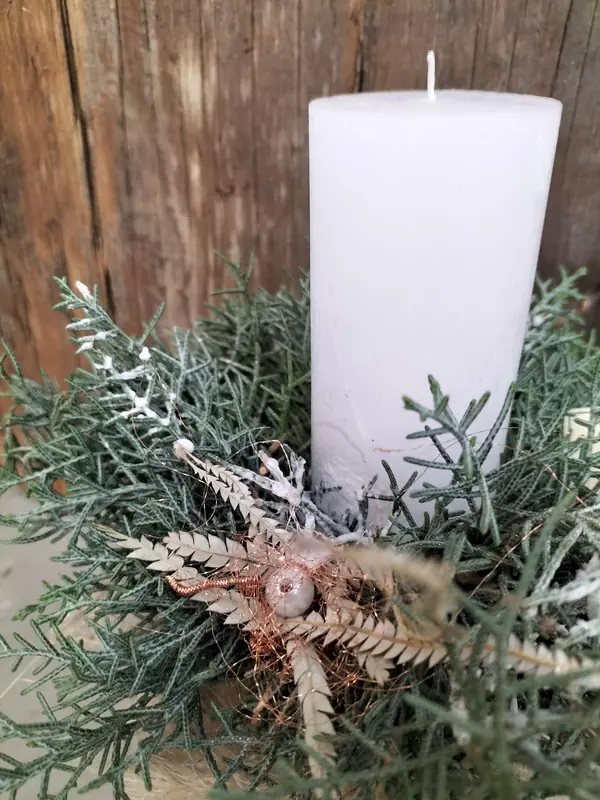
Décorations
Les abonnements ne s'arrêtent pas aux fleurs fraîches : fleurs séchées et plantes décorées aussi, à la fréquence qui vous convient, pour un particulier comme pour une entreprise.
Demander un abonnementPrestations
Pour les grands jours et les plus difficiles
Mariages
Pour chaque moment de votre mariage, vous trouverez ce qu'il vous faut.
- Bouquet de mariée
- Boutonnière
- Diadème fleuri
- Cérémonie : arche, tables, bancs d'église
Deuil
Pour rendre un bel hommage à un être cher.
- Gerbes
- Dessus de cercueil
- Bouquets
Événementiel
Pour une fête d'entreprise, une réception, un baptême ou tout autre événement : faites-nous part de vos envies.
Livraison
Toutes les créations sont livrées à domicile, dès 6.– à Avenches. Votre localité n'est pas dans la liste ? Il suffit de demander.
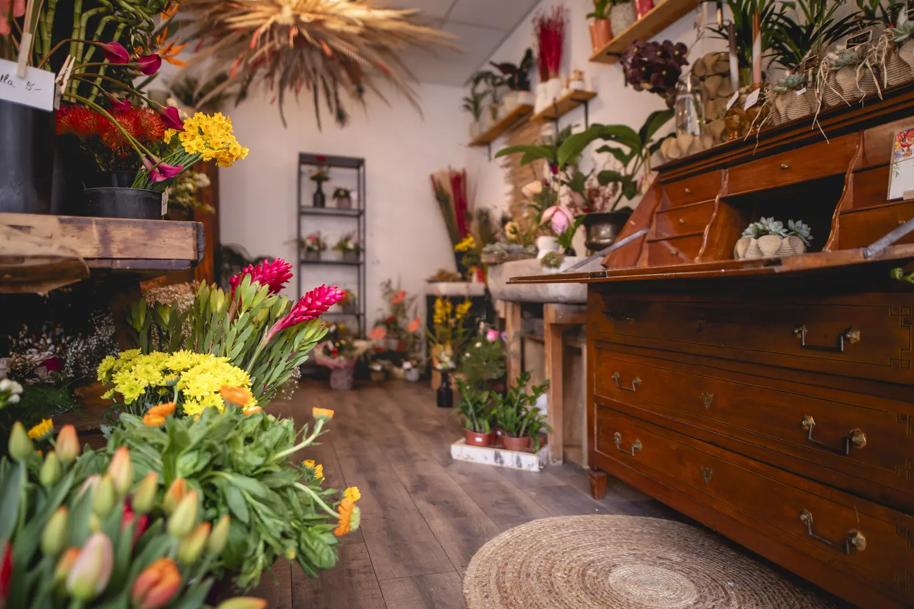
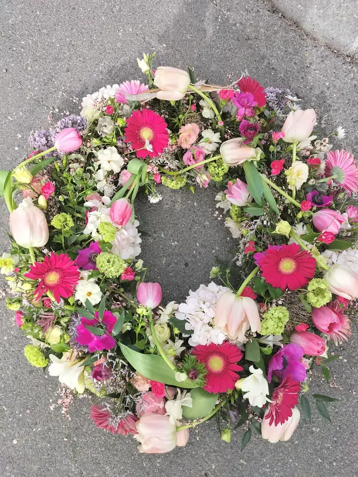
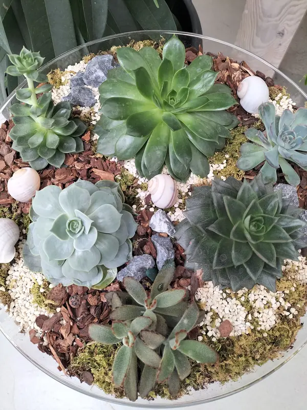
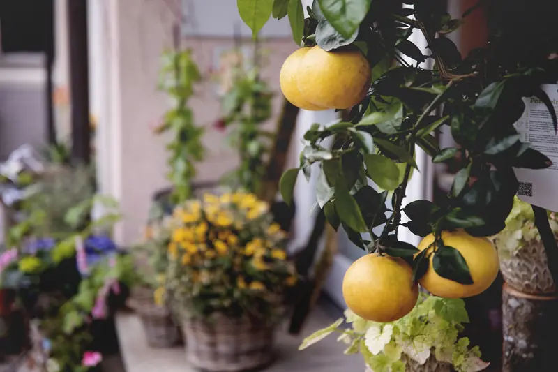
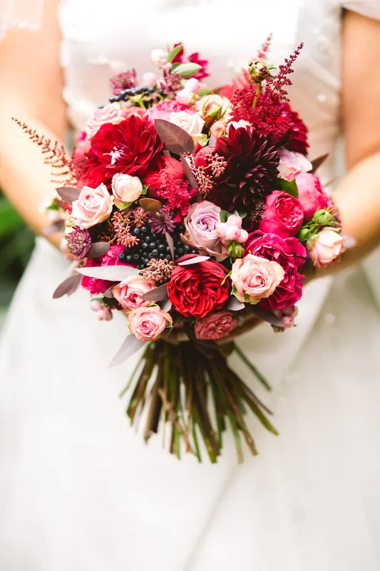
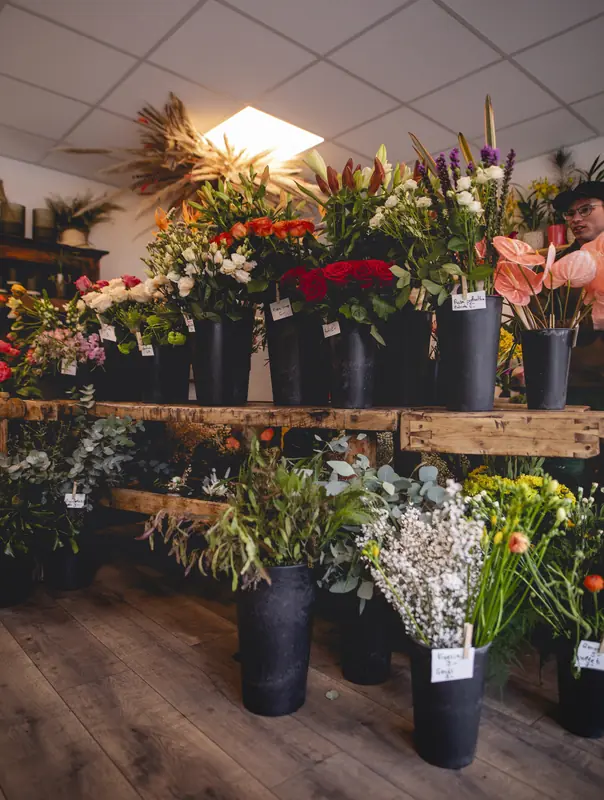
« Je vous propose d’entrer dans mon monde et de venir me rendre visite. »
Horaires et adresseCréations et boutique de La Source aux fleurs.
Horaires d'ouverture
| Lundi – vendredi | 08h15 – 12h 13h30 – 18h15 |
| Samedi | 08h – 16h15 |
| Dimanche | 10h – 12h15 |